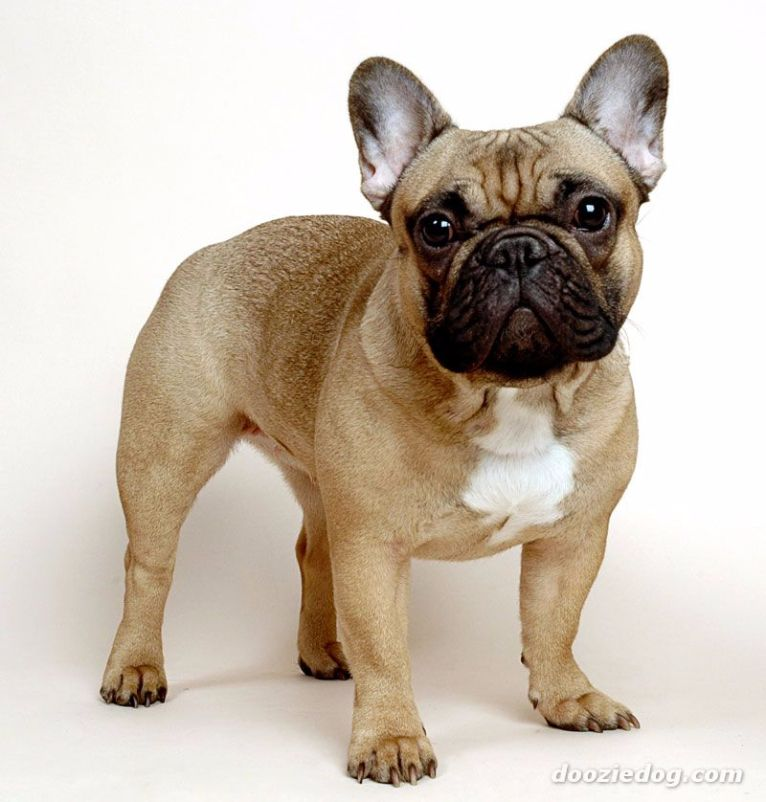

São bernado
São-bernardo (em alemão: St. Bernardshund) é uma raça de cães de porte grande a gigante de tipo molosso.
 Adotar
Adotar

Buldogue
O buldogue-inglês (em inglês: English Bulldog) é uma raça de cães do tipo buldogue oriunda da Inglaterra.
 AdotarPastor-de-shetland
Pastor-de-shetland (em inglês: Shetland Sheepdog) é uma raça canina de pastoreio do tipo spitz originária das Ilhas Shetland.
 Adotar
Adotar